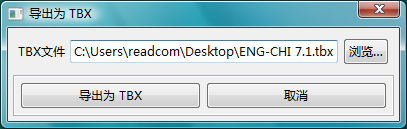
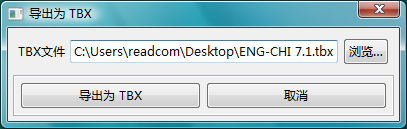

第 4 步：导出为 TBX
完成第 1、2、3 步之后，您便可以将文件以 TBX 格式导出。
单击  按钮或选择文件菜单的"导出为 TBX" 选项以便显示下示对话框:
按钮或选择文件菜单的"导出为 TBX" 选项以便显示下示对话框:

导出为 TBX
在您确定 TBX 应该使用的名称和所需的选项之后，单击"导出为 TBX" 按钮完成转换。
第 4 步：导出为 TBX完成第 1、2、3 步之后，您便可以将文件以 TBX 格式导出。 单击  导出为 TBX 在您确定 TBX 应该使用的名称和所需的选项之后，单击"导出为 TBX" 按钮完成转换。 |